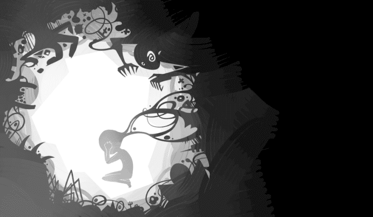

Daryush "Roosh" Valizadeh created ROK in October 2012. You can visit his blog at RooshV.com or follow him on Twitter and Facebook.


It’s tempting to think that you can start over at any moment, just pack up your bags and head to new places, but like a shadow, your past will follow you. Wherever you go and whatever you do, your memories, experiences, and mistakes will never be far behind.
The lives of my parents shaped me as a child, which shaped the teenager I became, which installed the itches I had to scratch as a young adult, which propelled me to notoriety as a grown man, which pushed me to soft exile in a place I myself won’t confirm. In the moment it takes a woman I meet to search for my name on the internet, the entire distillation of my life is presented to her eyes in computerized form. In the seconds it takes a man to connect my face to a name he’s heard before, he sees a frustrated 19-year-old guy who was stuck being friends with girls and nothing more. In the hours it takes a journalist to write a hit piece on me, images flash of a little boy playing by himself, discovering new patterns.
Everything that happens in this moment is anchored to everything that happened before it, and this I can’t escape. A random whim or flight of fancy I once tickled is still with me today, its unexpected repercussions I will never shake. A spontaneous flash of creativity in the past firmly shackles me in the present.
I wonder what it would be like to hit the reset button and start with a new identity, a fantasy that can only come from the mind of a man who wishes to reverse his fame and go back to being a nobody, but this heavy anchor I must lug around with me, even to a tiny village where it would just take a month or two until a local recognizes me. The gossip and the looks and the paranoia follow. You either die a hero, or live long enough to see yourself become a meme, one that always stays with you.
When I’m sitting in public, I don’t put my back to the door. I scan every face. By now I can tell when someone knows me, when they’re talking about me, when they’re brave enough to take a picture on the sly. I have a speech ready for when she finds out, and I watch her face carefully as she decides to take it or leave it. I don’t invest time making friends with normal people because they won’t be able to handle what I’ve said in the past. Choosing to be alone more than not stops a lot of surprises, but I’m still ready for a loud knock at the door. If I must go to a new land tomorrow, and leave everything behind, including the little plants that I water every week, so be it.
What have I done?
This anchor weighs on me heavily. I’m squeezed in tight, my body cramps. Why write a new book when it will be burned? Why open a new internet site that will be shut down? Why do a lecture when the hotel will cancel at the last minute? Why open a cute hipster cafe in old age when protesters will show up in front? I wait for something to change, but I know that nothing will. People have their own anchors to deal with than worry about mine.

One day I will burst. I can feel it coming. In a moment of beautiful rage, I will use all my strength and pick up my anchor and lift it over my head and throw it at whatever or whomever I want to destroy. My target will perish, I have no doubt, but attached to my leg is a shackle and chain. I will fly through through the air and be destroyed myself. Everything that happened to me, and everything that happened to my parents, their ancestors, Adam, the first atom, and the whole of the universe will blaze before my eyes. My anchor will explode into 10,000 pieces as my consciousness returns to the source. Finally, I can stretch.
This article was originally published on Roosh V.
Read Next: You Become What You Fight